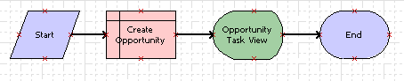

Creating the Task
This task is a step in Example of Developing a Task that Assists with Adding an Opportunity.
In this topic, you create the task and define the task flow.
To create the task
-
In the Workspace Explorer, open your Developer Workspace – for more information, see Create or Open a Workspace.
-
In the Object Explorer, click Project.
-
In the Projects list, create a new project named Opportunity Task.
You can use this project to support this development effort. For more information, see Using Siebel Tools.
-
Create a new task with the properties shown in the following table. For more information, see Creating a Custom Task.
Properties to configure when creating a new task. Property Description Project
Select Opportunity Task.
Task Name
Enter (type in) Create New Opportunity.
Display Name
Enter (type in) Create New Opportunity.
Business Object
Select Opportunity.
Transient Business Component
Leave this field empty.
Subtask
Make sure this option does not include a check mark.
-
Add the following steps and connectors until your task resembles the flow illustrated in the following image:
-
A Start step.
-
A Create Opportunity step.
-
An Opportunity Task View step.
-
An End step.
-
The following connectors: A connector between step (a) and (b), step (b) and (c), and step (c) and (d).

The label for the task view step appears after you bind the view (in a subsequent step in this example). For more information, see Diagramming a Task.
-
-
Select the Create Opportunity step and in the Properties pane, configure the properties for the step as shown in the following table.
Properties to configure for the Create Opportunity step. Property Value Business Component
Opportunity
Defer Write Record
For more information, see About the Defer Write Record Property.
TRUE
Operation
Insert
-
Close the Task Editor.